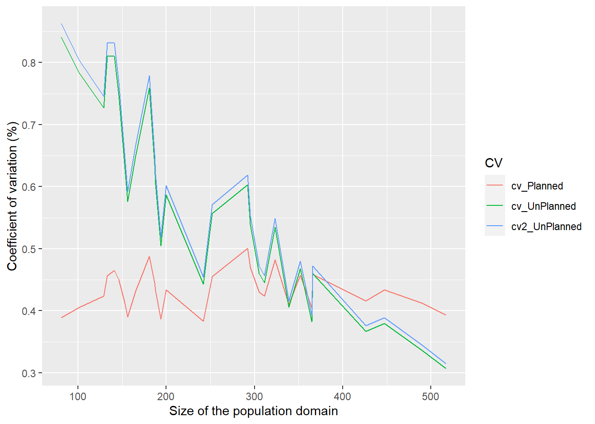

In Chapter 6 of the textbook Practical Methods for Design and Analysis of Complex Surveys, estimation of population totals for population subgroups or domains is discussed by using design-based model-assisted estimation procedures. The generalized regression (GREG) estimator is used extensively. Different extensions are introduced where the alternatives of the assisting model cover linear fixed-effects models and linear mixed models involving domain-specific random effects in addition to the fixed effects. In addition to the GREG estimator, various synthetic estimators are introduced. Variance estimation of the estimated domain totals is discussed. The methods are demonstrated for the Occupational Health Care Survey data set.
In Training Key 190, the Horvitz-Thompson estimator and the GREG estimator of domain totals are compared with respect to the accuracy of estimation, reproducing the results of Example 6.1
In Training Key 205, the methods for domain estimation are examined further and the results of Example 6.2 are reproduced. An option is provided for more detailed examination of the accuracy of the estimators with different sample sizes.
Impact of sampling design in estimation for domains: the cases of unplanned domain and planned domain structures.
Impact of sampling design in estimation for domains: the cases of unplanned and planned domain structures. Problems may be encountered when working with an unplanned domain structure, because small domain samples can be obtained for domains with a small population size, if the overall sample size is not large, involving imprecise estimation. For example, if the sample has been drawn with simple random sampling without replacement, then the expected sample size in a domain would be \(E(n_{s_d}) = n \times (N_d / N)\), thus corresponding to proportional allocation in stratified sampling. An alternative is based on the planned domain structure, where the domains are defined as strata. Then, more appropriate allocation schemes can be applied. In this example, the allocation scheme is based on power allocation (see Section 3.1). In power or Bankier allocation, the sample is allocated into the domains based on information on the coefficient of variation of the response variable \(y\) in the domains and on the possibly known domain totals \(T_{dz}\) of an auxiliary variable \(z\). We use a simplified version of power allocation in a hypothetical situation where the coefficients of variation \(C.V_{dy} = S_{dy} / \bar{Y_{d}}\) of the response variable \(y\) are known in all domains, where \(S_{dy}\) and \(\bar{Y_{d}}\) are the population standard deviation and the population mean of \(y\) in domain \(d\), respectively.
We illustrate the methodology by selecting an SRSWOR sample (\(n=392\) persons) from the Occupational Health Care Survey (OHC) data set (\(N=7841\) persons) and estimating the total number of chronically ill persons in the \(D=30\) domains constructed. In the population, the sizes of the domains vary with a minimum of 81 persons and a maximum of 517 persons. The results for the allocation of the sample by proportional allocation (corresponding to an unplanned domain structure) and by power allocation (corresponding to a planned domain structure) are shown in Table 6.2. The domain totals of the number of chronically ill persons are estimated by a Horvitz-Thompson estimator \(\hat{t}_{dHT} = \sum_{k \in s_d} w_k y_k\). The stability of the estimators is measured by the population coefficient of variation of an estimator of a domain total, given by \(C.V(\hat{t}_{dHT}) = S.E(\hat{t}_{dHT}) / T_d\).
print("Load saem data:")## [1] "Load saem data:"load("saem.Rdata")
n <- 392 # SRSWOR sample (n=392 persons) from the Occupational Health Care Survey (OHC) data set (N=7841 persons)
library(tidyverse)
print("Some descriptives by domains:")## [1] "Some descriptives by domains:"sae2 <- saem %>% group_by(DOMAIN) %>%
summarise(n_Pop = n(), t_chron = sum(CHRON), mean_chron = mean(CHRON), std_chron = sd(CHRON)) %>%
arrange(n_Pop)
sae2## # A tibble: 30 x 5
## DOMAIN n_Pop t_chron mean_chron std_chron
## <dbl> <int> <dbl> <dbl> <dbl>
## 1 10 81 27 0.333 0.474
## 2 20 101 31 0.307 0.464
## 3 18 129 36 0.279 0.450
## 4 3 133 29 0.218 0.414
## 5 8 141 29 0.206 0.406
## 6 30 146 34 0.233 0.424
## 7 21 153 48 0.314 0.466
## 8 23 156 57 0.365 0.483
## 9 16 165 45 0.273 0.447
## 10 1 181 33 0.182 0.387
## # ... with 20 more rowsn_Pop <- sae2$n_Pop
n_Tot <- nrow(saem)
# n_UnPlanned Calculation
n_UnPlanned <- n * (n_Pop / n_Tot)
cv_Chron <- sae2$std_chron / sae2$mean_chron
# n_Planned Calculation
cv_Tot <- sum(cv_Chron)
n_Planned <- n * cv_Chron / cv_Tot
# Calculation of Coefficients of Variation
pd <- n_Pop / n_Tot
qd <- 1 - pd
# Planned Domains (STRWOR_POWER)
Var_Planned <- n_Pop^2 * (1 - n_Planned / n_Pop) * (1 / n_Planned) * sae2$std_chron^2
se_Planned <- sqrt(Var_Planned)
cv_Planned <- se_Planned / sae2$t_chron
# UnPlanned Domains (SRSWOR)
Var_UnPlanned <- n_Tot^2 * (1 - n / n_Tot) * (1 / n) * pd * sae2$std_chron^2 * ( 1 + qd / cv_Chron^2)
se_UnPlanned <- sqrt(Var_UnPlanned)
cv_UnPlanned <- se_UnPlanned / sae2$t_chron
# UnPlanned Domains (SRSWOR) / Conservative approximation
Var2_UnPlanned <- n_Pop^2 / n_UnPlanned * sae2$std_chron^2 * (1 + qd / cv_Chron^2)
se2_UnPlanned <- sqrt(Var2_UnPlanned)
cv2_UnPlanned <- se2_UnPlanned / sae2$t_chron
# Contructing datasets for plotting
CV <- rep("cv_Planned", 30)
Value <- cv_Planned
cv_Planned_data <- cbind.data.frame(n_Pop, Value, CV)
#
CV <- rep("cv_UnPlanned", 30)
Value <- cv_UnPlanned
cv_UnPlanned_data <- cbind.data.frame(n_Pop, Value, CV)
#
CV <- rep("cv2_UnPlanned", 30)
Value <- cv2_UnPlanned
cv2_UnPlanned_data <- cbind.data.frame(n_Pop, Value, CV)
#
# combine datasets
plotdata <- rbind.data.frame(cv_Planned_data, cv_UnPlanned_data, cv2_UnPlanned_data)
# Coefficient of variation (%) for planned and unplanned domains
ggplot(plotdata, aes(y = Value, x = n_Pop, group = CV)) +
geom_line(aes(color=CV)) +
xlab("Size of the population domain") + ylab("Coefficient of variation (%)")
Please download the SAS code for your own further training.
NOTE! You need to have access to SAS in your computer.
Example 6.2. Estimation of domain totals by design-based model-assisted methods under SRSWOR sampling. We illustrate the domain estimation methodology by selecting an SRSWOR sample (\(n = 1960\) persons) from the OHC Survey data set (\(N = 7841\) persons) and estimating the total number of chronically ill persons in the \(D = 30\) domains constructed. In the population, the sizes of the domains vary with a minimum of 81 persons and a maximum of 517 persons. The domain proportion of chronically ill persons varies from 18 to 39%, and the overall proportion is 29%. The intra-domain correlation of being chronically ill (binary response) and the age (in years) varies from 0.08 to 0.55; the overall correlation is 0.28.
We will demonstrate how to perform model-assisted estimation for domains in the setting of Example 6.2. Further instructions are given once you start.
We will demonstrate how to perform model-assisted estimation for domains with different sample sizes. The Horvitz-Thompson (HT) estimator and the generalized regression (GREG) estimator of a domain total are compared by examining the standard error and coefficient of variation estimates. Further instructions are given once you start.
Please download the SAS code for your own further training. Select your own sample or several samples and exercise model-assisted estimation for domains with different sample sizes for a SRSWOR sample. The macro parameters used in the application are n = sample size, seed = seed for the random number generator (default seed=99919481957).
NOTE! You need to have access to SAS in your computer.